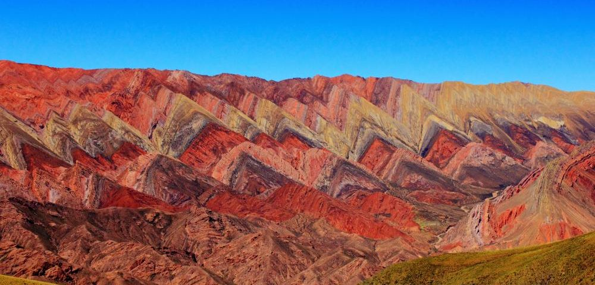
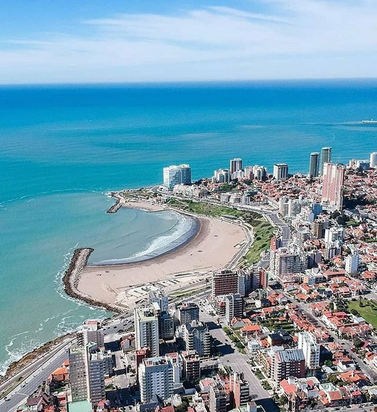
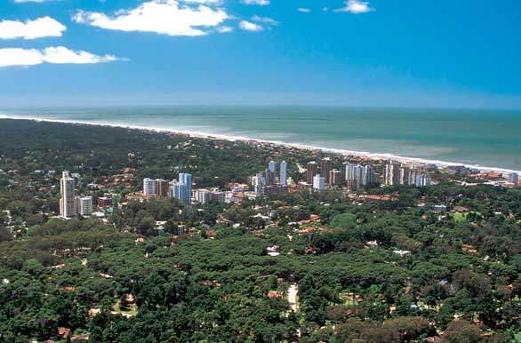
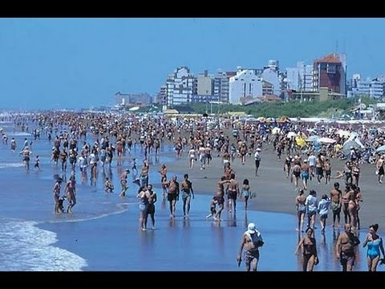

Destinos
El nuevo sistema web está en fase de prueba y solo se puede utilizar para viajes dentro de Argentina.







El nuevo sistema web está en fase de prueba y solo se puede utilizar para viajes dentro de Argentina.